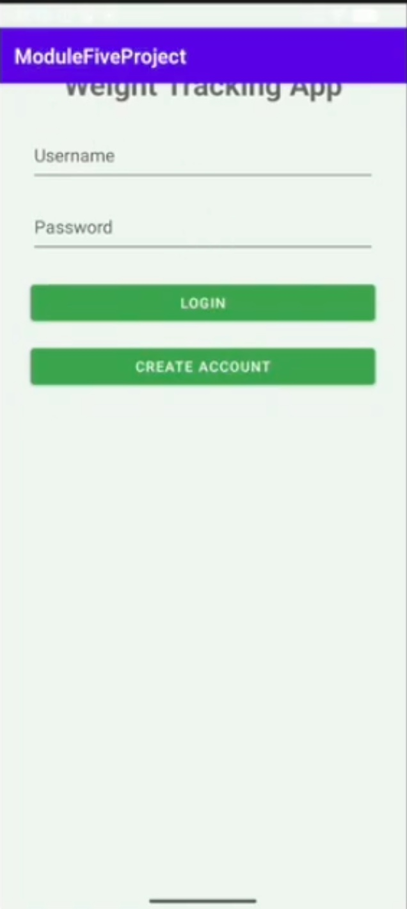
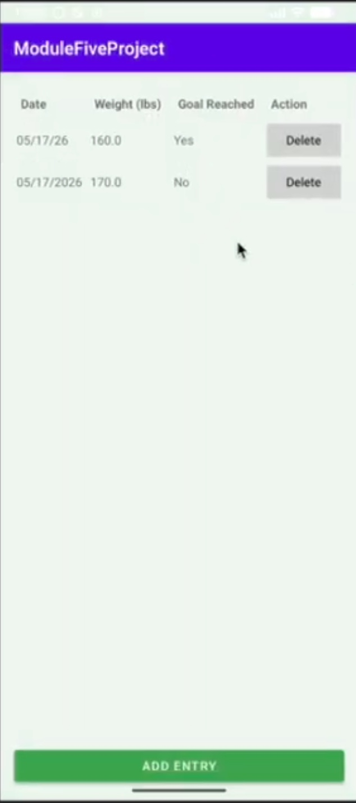
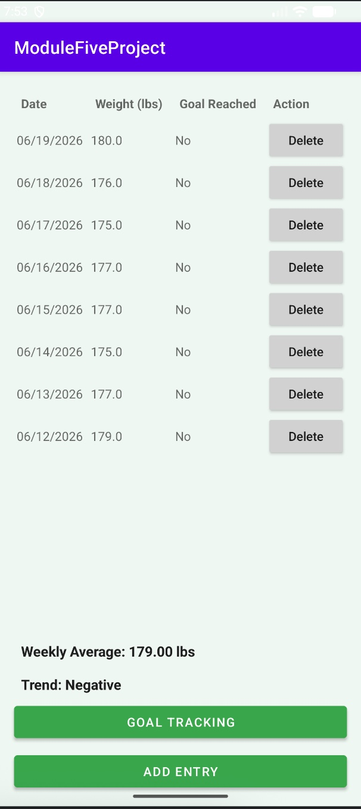

Enhancement Overview
This enhancement improved the original CS 360 Weight Tracking Application by adding weekly averages, weekly grouping, and organized weight logs by date. These changes help users understand their weight data more clearly instead of only viewing individual entries. By structuring the data in a more useful way, the application provides better feedback and makes progress easier to review.
Skills Demonstrated
- Data Structures
- Algorithm Design
- Data Sorting
- Data Analysis
- Weekly Average Calculations
- Logical Problem Solving
Course Outcome Alignment
This enhancement demonstrates my ability to solve a practical problem using calculations, logical expressions, and organized data structures. The original application allowed users to enter and view weight logs, but it did not provide much analysis of that information. By adding weekly averages and date-based organization, I improved how the application processes and presents user data.
Original Artifact Screenshots
These screenshots show the original version of the CS 360 Weight Tracking Application before the algorithms and data structures enhancement was added.


Enhanced Artifact Screenshot
This screenshot shows the enhanced version of the application with weekly grouping, weekly averages, and improved organization of weight entries.

Narrative
The artifact selected for this project is a Weight Tracking Application that was created as a project in CS 360. This application is simple and allows a user to login/create an account, enable SMS notifications, and enter weight logs. One thing that was missing from this project that could enhance usability were functions to calculate trends, and a weekly average for the weight log screen. Another enhancement that was performed to enhance the project was sorting entries by date and grouping entries by the week. Overall, this project was essentially just an application used for entering current weight, and a goal weight. I selected this artifact for the Algorithms and Data Structures section of my ePortfolio to demonstrate my skills. Implementing an ArrayList to store weight entries from database and a HashMap to group them by week shows my Data Structure skills. I also created an algorithm in this enhancement that will calculate the weekly average of the weight logs as well as a trend indicator to showcase the data. By adding these enhancements, the data makes more sense to a user, rather than just a table of weight logs. Sorting the data, and grouping the data by week also makes the application more accessible to a user. Overall, this enhancement was chosen to demonstrate skills but also increase the user experience of the application. The skill outcome I chose for this enhancement is “Design and evaluate computing solutions that solve a given problem using algorithmic principles and computer science practices and standards appropriate to its solution while managing the trade-offs involved in design choices.” I believe I met this goal because the problem before the enhancement involved users not understanding the data by adding weight logs to the application. When I used algorithmic principles and made a solution, I was able to achieve this goal. I also had to trade-offs in design because the weight log screen now has more data shown, but it’s not enough to be overwhelming for a user. By creating a trend analysis, weekly average, and grouping entries by week, users can now easily see what their data looks like as a whole. While working on this enhancement, I learned that changing data is used in an application is important. Data is necessary in most applications, and making sure users understand what the data does is also important. For example, adding trend analysis and weekly average gives users an understanding of why they are entering their weight logs. One challenge I faced while working on this enhancement was calculating weekly averages and grouping the data by week. Because it’s a “weekly” average, I had to reshape the data to actually group a Calander week. Overall, this enhancement has demonstrated my skills for Algorithms and Data Structures to improve my artifact.
Original Artifact
Original version of the CS 360 Weight Tracking Application.
Download Original ArtifactEnhanced Artifact
Enhanced version containing weekly averages, weekly grouping, and organization by date.
Download Enhanced ArtifactFull Narrative
Full narrative discussing enhancement decisions, implementation, challenges, and demonstrated algorithmic skills.
Download Full Narrative